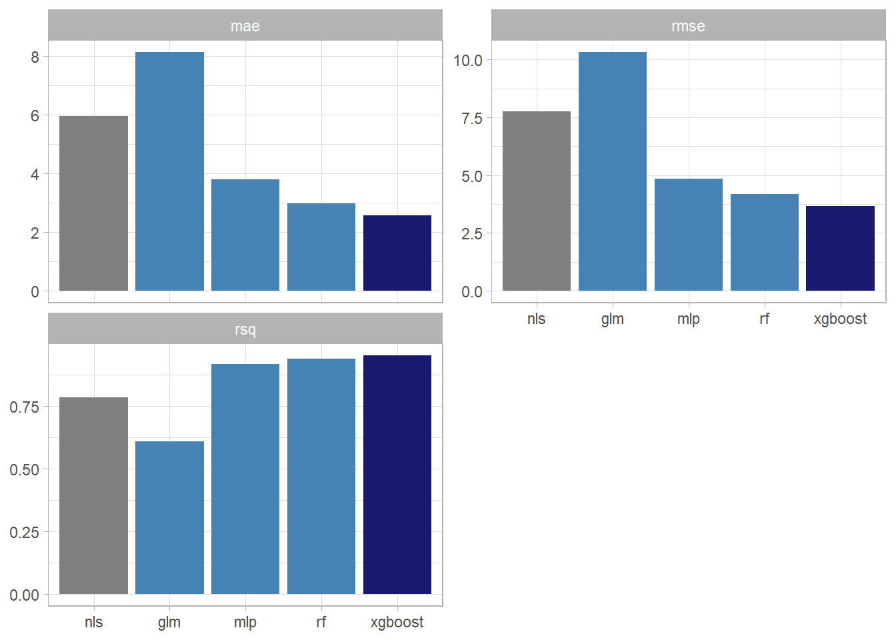
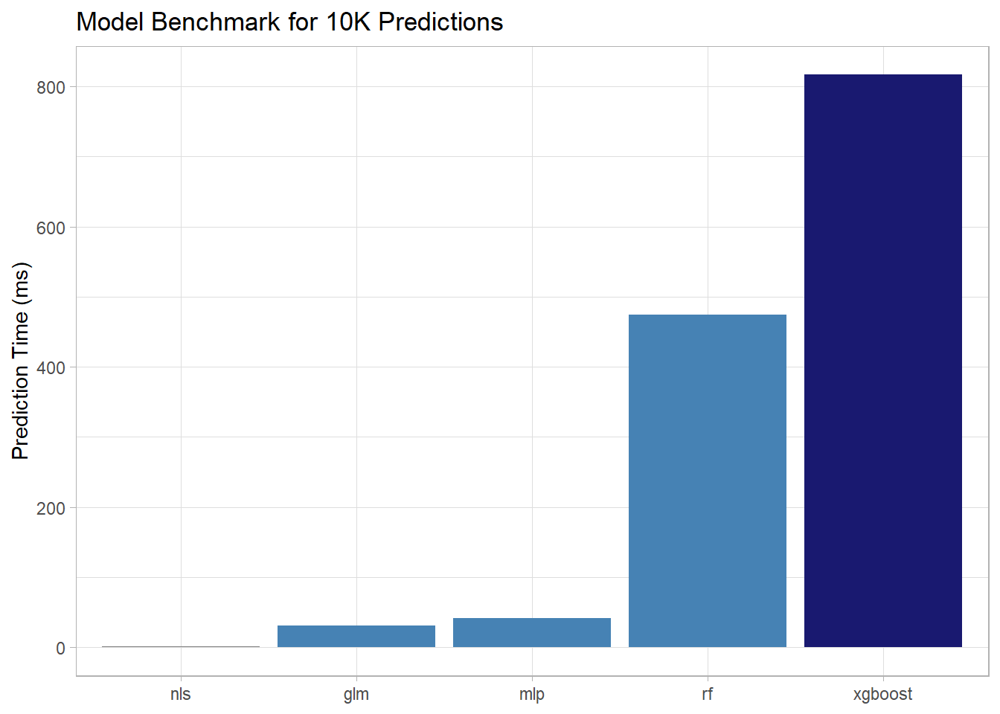

Summary of Models to Predict the Strength of High Performance Concrete
Posted on December 4, 2020
Several models have been created to predict the compressive strength of high performance concrete based on the I-Cheng Yeh dataset. A conventional material model using a pre-determined transfer function which was fit to the data using a non-linear least squares approach. Four different models were created using machine learning algorithms, elastic net (glmnet), single-layer neural net (nnet), random forest (ranger) and boosted tree (xgboost), applied to the dataset.
Predictive Accuracy
Each model performance was assessed by several metrics: R-squared (R2), Root Mean Square Error (RMSE) and Mean Absolute Error (MAE).

metric
nls
glm
mlp
rf
xgboost
rmse
7.76
10.31
4.83
4.19
3.67
rsq
0.78
0.61
0.92
0.94
0.95
mae
5.95
8.12
3.79
2.98
2.57
As shown in the figure and table above, the random forest (rf) and boosted tree (xgboost) models showed a significant improvement in predictive capability as compared with the conventional modeling approach (nls). The xgboost model had an R2 of 0.95 compared to 0.78 for the nls model with similar improvements in root mean square error and mean absolute error. The glmnet model gave worse performance than the non-linear models.
Benchmark performance
Here we load the final models for the different approaches for comparison of prediction time. In this case, the time to make predictions for 10,300 (10 times the original dataset) was determined as a benchmark.
#load all the models
concrete_nls <- readRDS("results/concrete_nls_model.rds")
concrete_glm <- readRDS("results/concrete_glm_model.rds")
concrete_mlp <- readRDS("results/concrete_mlp_model.rds")
concrete_rf <- readRDS("results/concrete_rf_model.rds")
concrete_xgb <- readRDS("results/concrete_xgb_model.rds")
Benchmarking was performed in the following manner using Sys.time to capture the time before and after each set of model predictions.
As shown in the figure and table below, the xgboost model was the slowest taking about 1 second to perform 10,300 predictions. For the example of making a prediction of compressive strength of concrete for a particular formulation, however, this amount of time is trivial and the increased accuracy would be preferred over a faster and less accurate model.

Model
Time (ms)
nls
1
glm
31
mlp
42
rf
475
xgboost
817
Prediction with the conventional model (nls) is about two orders of magnitude faster than the boosted tree model (xgboost). It should be noted that the random forest model is about 40% faster than the xgboost model, in this case, with similar predictive accuracy.